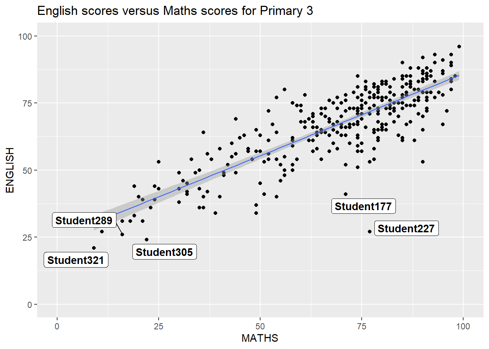
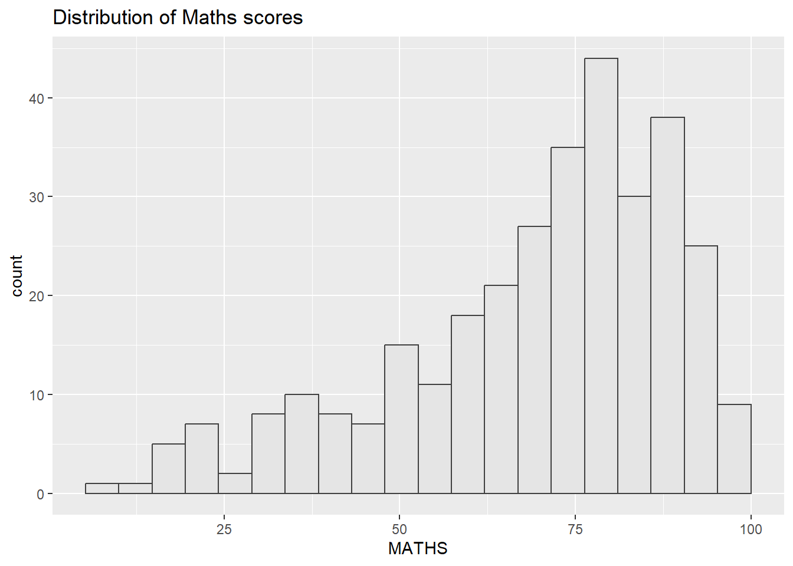
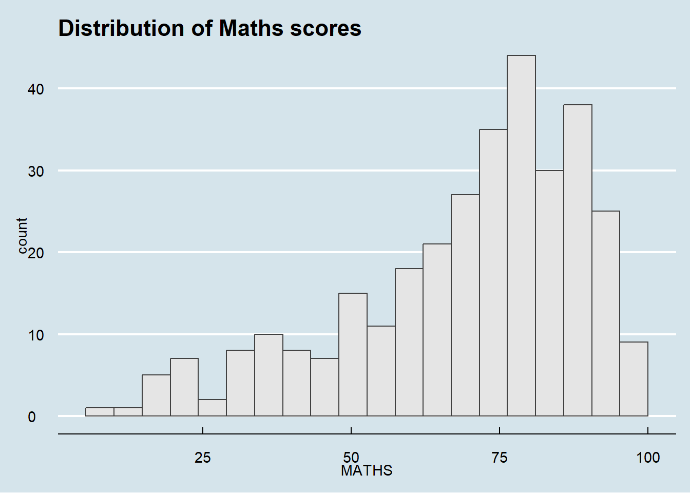
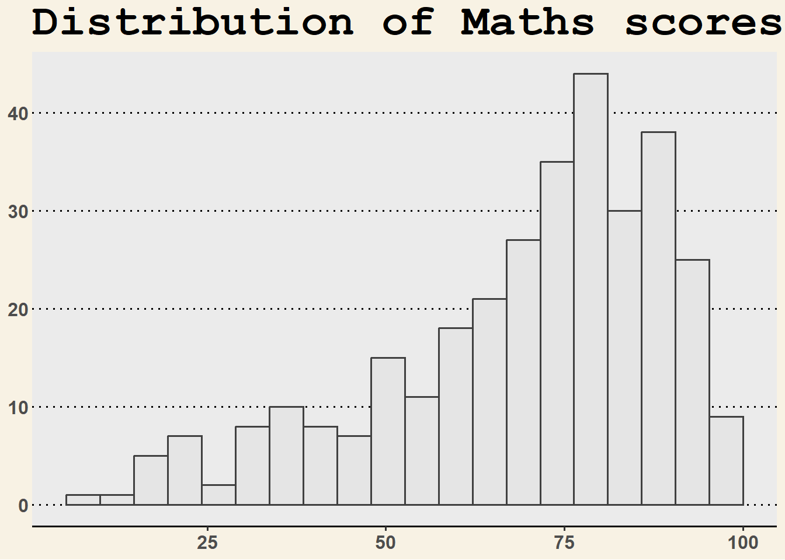
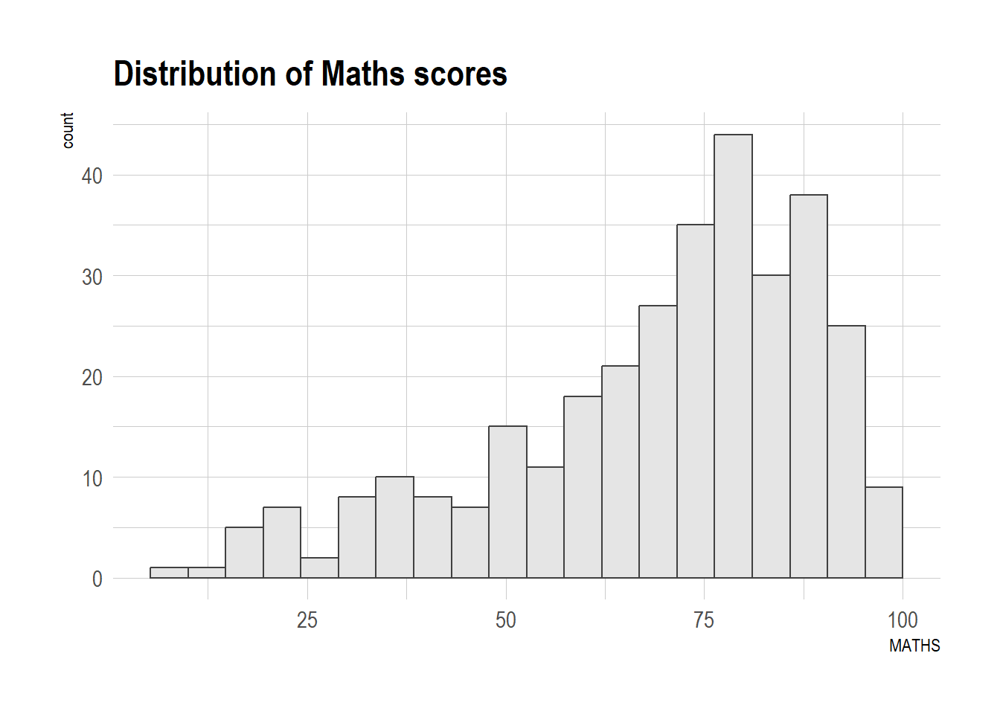
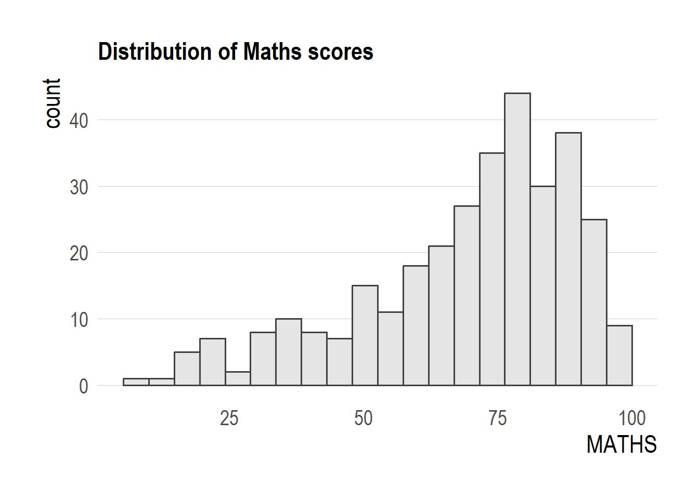
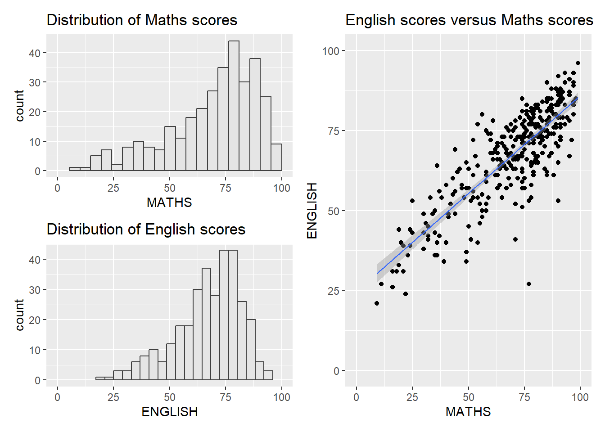
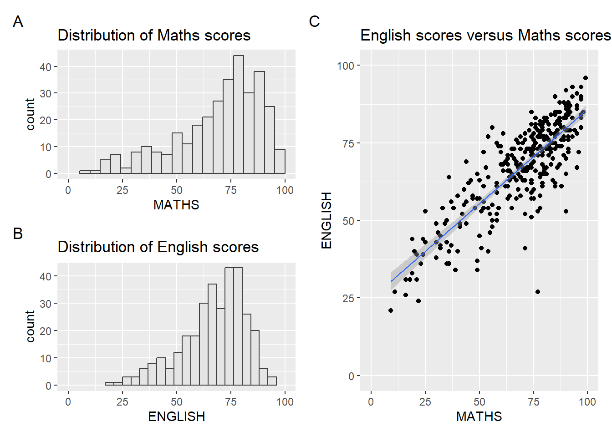
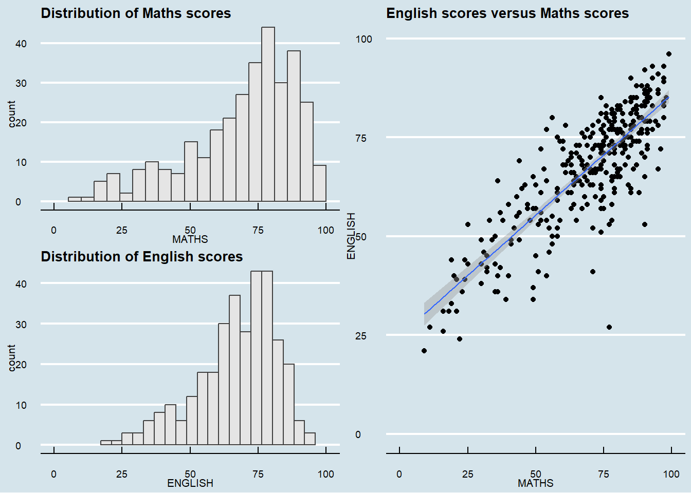

pacman::p_load(ggrepel,
patchwork,
ggthemes,
hrbrthemes,
tidyverse,
psych,
ggplot,
extrafont
)2 Beyond ggplot2 Fundamentals
2.1 Purpose
Using several ggplot2 extensions for creating more elegant and effective statistical graphics:
- Control the placement of annotation on a graph by using functions provided in ggrepel package.
- Create professional publication quality figure by using functions provided in ggthemes and hrbrthemes packages.
- Plot composite figure by combining ggplot2 graphs by using patchwork package.

2.2 Getting started
2.2.1 Installing and loading the required libraries
Beside tidyverse, four R packages will be used:
- ggrepel: an R package provides geoms for ggplot2 to repel overlapping text labels.
- ggthemes: an R package provides some extra themes, geoms, and scales for ‘ggplot2’.
- hrbrthemes: an R package provides typography-centric themes and theme components for ggplot2.
- patchwork: an R package for preparing composite figure created using ggplot2.
Code chunk below will be used to check if these packages have been installed and also will load them onto your working R environment.
2.2.2 Importing data
The code chunk below imports exam_data.csv into R environment by using read_csv() function of readr package. readr is one of the tidyverse package.
exam_data <- read_csv("data/Exam_data.csv")head(exam_data, n = 10)# A tibble: 10 × 7
ID CLASS GENDER RACE ENGLISH MATHS SCIENCE
<chr> <chr> <chr> <chr> <dbl> <dbl> <dbl>
1 Student321 3I Male Malay 21 9 15
2 Student305 3I Female Malay 24 22 16
3 Student289 3H Male Chinese 26 16 16
4 Student227 3F Male Chinese 27 77 31
5 Student318 3I Male Malay 27 11 25
6 Student306 3I Female Malay 31 16 16
7 Student313 3I Male Chinese 31 21 25
8 Student316 3I Male Malay 31 18 27
9 Student312 3I Male Malay 33 19 15
10 Student297 3H Male Indian 34 49 372.2.3 Statistics
Show some statistics about this data.
There are a total of seven attributes in the exam_data tibble data frame. Four of them are categorical data type and the other three are in continuous data type.
The categorical attributes are: ID, CLASS, GENDER and RACE. The continuous attributes are: MATHS, ENGLISH and SCIENCE.
library(psych)
describe(exam_data) vars n mean sd median trimmed mad min max range skew
ID* 1 322 161.50 93.10 161.5 161.50 119.35 1 322 321 0.00
CLASS* 2 322 4.71 2.49 5.0 4.68 2.97 1 9 8 0.09
GENDER* 3 322 1.47 0.50 1.0 1.47 0.00 1 2 1 0.11
RACE* 4 322 1.79 1.00 1.0 1.71 0.00 1 4 3 0.59
ENGLISH 5 322 67.18 14.69 70.0 68.50 13.34 21 96 75 -0.77
MATHS 6 322 69.33 19.98 74.0 71.61 17.79 9 99 90 -0.93
SCIENCE 7 322 61.16 18.18 65.0 62.50 17.79 15 96 81 -0.60
kurtosis se
ID* -1.21 5.19
CLASS* -1.17 0.14
GENDER* -1.99 0.03
RACE* -1.41 0.06
ENGLISH 0.18 0.82
MATHS 0.17 1.11
SCIENCE -0.35 1.012.3 Beyond ggplot2
2.3.1 Annotation: ggrepel
ggrepel is an extension of ggplot2 package which provides geoms for ggplot2 to repel overlapping text as in our examples on the right.
We simply replace geom_text() by geom_text_repel() and geom_label() by geom_label_repel.

ggplot(data=exam_data,
aes(x= MATHS,
y=ENGLISH)) +
geom_point() +
geom_smooth(method=lm,
size=0.5) +
geom_label_repel(aes(label = ID),
fontface = "bold") +
coord_cartesian(xlim=c(0,100),
ylim=c(0,100)) +
ggtitle("English scores versus Maths scores for Primary 3")2.4 Beyond ggplot2 Themes
p1 <- ggplot(data=exam_data,
aes(x = MATHS)) +
geom_histogram(bins=20,
boundary = 100,
color="grey25",
fill="grey90") +
ggtitle("Distribution of Maths scores")
p1
2.4.1 Working with ggtheme package
ggthemes provides ‘ggplot2’ themes that replicate the look of plots by Edward Tufte, Stephen Few, Fivethirtyeight, The Economist, ‘Stata’, ‘Excel’, and The Wall Street Journal, among others.
The Economist theme:
p1 + theme_economist()
The Wall Street Journal theme:
p1 & theme_wsj() & theme(plot.margin = margin(5, 5, 5, 5))
Other ggthemes can be explorered here.
2.4.2 Working with hrbtheme package
hrbrthemes package provides a base theme that focuses on typographic elements, including where various labels are placed as well as the fonts that are used.
Install fonts to use theme_ipsum()
install.packages("extrafont")
library(extrafont)
font_import()
loadfonts(device = "win")p2 <- ggplot(data=exam_data,
aes(x = MATHS)) +
geom_histogram(bins=20,
boundary = 100,
color="grey25",
fill="grey90") +
ggtitle("Distribution of Maths scores")
p2 + theme_ipsum()
p2 +
theme_ipsum(axis_title_size = 18,
base_size = 15,
grid = "Y")
TipWhat we modify above?
axis_title_sizeargument is used to increase the font size of the axis title to 18,base_sizeargument is used to increase the default axis label to 15, andgridargument is used to remove the x-axis grid lines.
2.5 Beyond Single Graph
Create single charts.
p1 <- ggplot(data=exam_data,
aes(x = MATHS)) +
geom_histogram(bins=20,
boundary = 100,
color="grey25",
fill="grey90") +
coord_cartesian(xlim=c(0,100)) +
ggtitle("Distribution of Maths scores")p2 <- ggplot(data=exam_data,
aes(x = ENGLISH)) +
geom_histogram(bins=20,
boundary = 100,
color="grey25",
fill="grey90") +
coord_cartesian(xlim=c(0,100)) +
ggtitle("Distribution of English scores")p3 <- ggplot(data=exam_data,
aes(x= MATHS,
y=ENGLISH)) +
geom_point() +
geom_smooth(method=lm,
linewidth=0.5) +
coord_cartesian(xlim=c(0,100),
ylim=c(0,100)) +
ggtitle("English scores versus Maths scores")2.5.1 Creating Composite Graphics: pathwork methods
In this case, we use an ggplot2 extension called patchwork which is specially designed for combining separate ggplot2 graphs into a single figure. Patchwork package has a very simple syntax where we can create layouts super easily. Here’s the general syntax that combines:
- Two-Column Layout using the Plus Sign +.
- Parenthesis () to create a subplot group.
- Two-Row Layout using the Division Sign /
2.5.2 Combining multiple ggplot2 graphs
(p1 / p2) | p3
2.5.3 Creating a composite figure with tag
((p1 / p2) | p3) +
plot_annotation(tag_levels = 'A')
2.5.4 Creating a composite figure by using patchwork and ggtheme
patchwork <- (p1 / p2) | p3
patchwork & theme_economist() &
theme(
plot.title = element_text(size = 10, face = "bold"),
axis.title = element_text(size = 8),
axis.text = element_text(size = 7),
plot.margin = margin(2, 2, 2, 2, "pt")
)